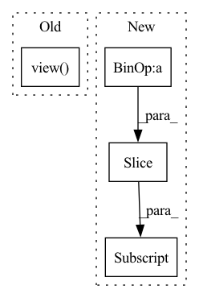

Pattern ID :17996

Before Change
cls_targets_out[level_index].append(
torch.index_select(cls_targets, 0, indices).view([feat_size, feat_size, -1]))
box_targets_out[level_index].append(
torch.index_select(box_targets, 0, indices).view([feat_size, feat_size, -1]))
if last_sample:
cls_targets_out[level_index] = torch.stack(cls_targets_out[level_index])
box_targets_out[level_index] = torch.stack(box_targets_out[level_index])
After Change
cls_targets_out[level_index].append(
cls_targets[count:count + steps].view([feat_size[0], feat_size[1], -1]))
box_targets_out[level_index].append(
box_targets[count:count + steps].view([feat_size[0], feat_size[1], -1]))
count += steps
if last_sample:
cls_targets_out[level_index] = torch.stack(cls_targets_out[level_index])
In pattern: SUPERPATTERN
Frequency: 3
Non-data size: 4
Instances
Fragment ID: 59068357
Project Name: rwightman/efficientdet-pytorch
Commit Name: 8244f8a93bbe8ebb5e977547b4ad7a9416ec068a
Time: 2020-10-06
Author: rwightman@gmail.com
File Name: effdet/anchors.py
M Class Name: AnchorLabeler
N Class Name: AnchorLabeler
M Method Name: batch_label_anchors(3)
N Method Name: batch_label_anchors(4)
M Parent Class: object
N Parent Class: object
M File Name: effdet/anchors.py
N File Name: effdet/anchors.py
M Start Line: 400
M End Line: 426
N Start Line: 367
N End Line: 396
'>
Before Change
yhat = torch.empty(see + pred)
yhat[:see] = x[:see]
with torch.no_grad():
mu = net(yhat[:see].view(1, 1, -1))[0, :, -1]
yhat[see : see + pred] = mu
plt.plot(ty, y, c="k")
After Change
ax.plot(tx[:see], x[:see], c="k", linewidth=0.5)
for p, label in preds:
yhat = p.predict(x[:see], horizon)
ax.plot(tx[see : see + horizon], yhat, label=label)
ax.set_ylim(-2, 2)
handles, labels = ax.get_legend_handles_labels()
fig.legend(handles, labels, loc="upper center")
'>
Fragment ID: 59068359
Project Name: cheind/autoregressive
Commit Name: 320dbcc72842b652d319f9fcdec663d2073d285c
Time: 2021-10-18
Author: cheind@profactor.at
File Name: autoregressive/model.py
M Class Name: AnonimousClass
N Class Name: AnonimousClass
M Method Name: eval(1)
N Method Name: eval(1)
M Parent Class:
N Parent Class:
M File Name: autoregressive/model.py
N File Name: autoregressive/model.py
M Start Line: 147
M End Line: 203
N Start Line: 199
N End Line: 246
'>
Before Change
cls_targets_out.append(
torch.index_select(cls_targets, 0, indices).view([feat_size, feat_size, -1]))
box_targets_out.append(
torch.index_select(box_targets, 0, indices).view([feat_size, feat_size, -1]))
num_positives = (matches.match_results != -1).float().sum()
After Change
feat_size = self.anchors.feat_sizes[level]
steps = feat_size[0] * feat_size[1] * self.anchors.get_anchors_per_location()
cls_targets_out.append(cls_targets[count:count + steps].view([feat_size[0], feat_size[1], -1]))
box_targets_out.append(box_targets[count:count + steps].view([feat_size[0], feat_size[1], -1]))
count += steps
num_positives = (matches.match_results != -1).float().sum()
'>
Fragment ID: 59068355
Project Name: rwightman/efficientdet-pytorch
Commit Name: 8244f8a93bbe8ebb5e977547b4ad7a9416ec068a
Time: 2020-10-06
Author: rwightman@gmail.com
File Name: effdet/anchors.py
M Class Name: AnchorLabeler
N Class Name: AnchorLabeler
M Method Name: label_anchors(3)
N Method Name: label_anchors(3)
M Parent Class: object
N Parent Class: object
M File Name: effdet/anchors.py
N File Name: effdet/anchors.py
M Start Line: 363
M End Line: 377
N Start Line: 350
N End Line: 360